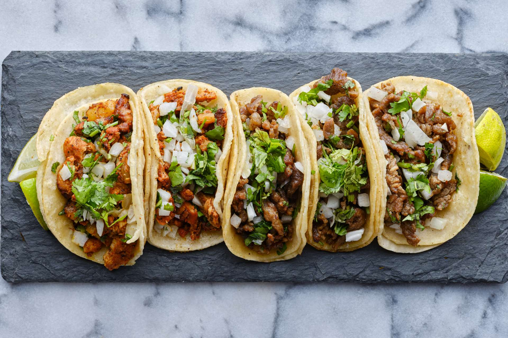

Steak Tacos

Description:
Steak tacos that are easy to make
Great for a late night meal, and will have you wanting more ;)
Ingredients
- 3 orn tortias
- 3 lbs copped up steak
- 1 head of lettuce
- Hot scaue
Driections:
- 1. Cook steak until meat isn't raw
- 2. On the same pan that you cooked the meat on, cook your tortias untill they are firm but still wobbly
- 3. Cut head of lettuce into thin pieces
- 4. Assemble and enjoy with hot scaue